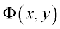
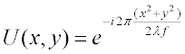
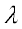
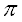
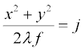
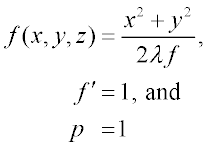
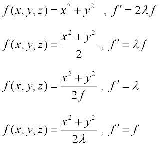

The surfaces created by the MULTIPLE command are the key to modeling diffractive optical elements (DOE). You must create a multiple surface whose intersection with the base surface specifies the grating lines.
These grating lines represent 2
 phase steps. Since these
grating lines are created by the
MULTIPLE command, they must be defined by the
equation
phase steps. Since these
grating lines are created by the
MULTIPLE command, they must be defined by the
equation
where j and p are integers and f' is a constant.
This process requires converting the phase surface into an equivalent equation describing the grating line spacing.
As an example, suppose you want to model a DOE lens that produces a simple quadratic phase function such that the element has a paraxial focal length f. Assuming the z axis is the propagation axis, the field produced by the DOE may be written in general as:
where
 is the phase function expressed in waves. In this
particular case, the phase function is a simple quadratic so that

where  is the construction wavelength and f is the focal length.
A grating line occurs every time the exponential goes through 2
and so the
general equation of the grating lines is given by

where
j is a positive or negative integer. By writing

you now have all the information necessary to define this element in ASAP. In general, an arbitrary DOE may be modeled by simply setting the phase function equal to j.
Other equally valid equations describing the grating line spacing may
be obtained by rearranging terms as follows:

Alternatively, you can define a radial spatial frequency function
and integrate it to get